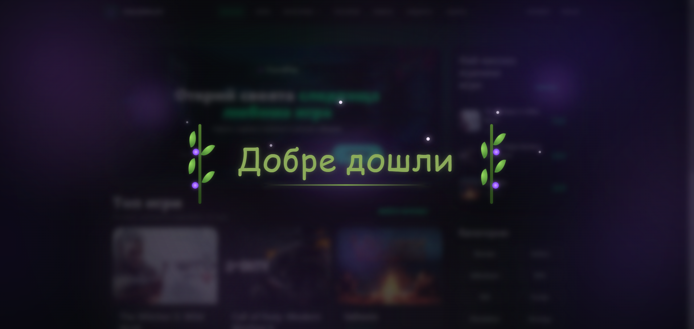
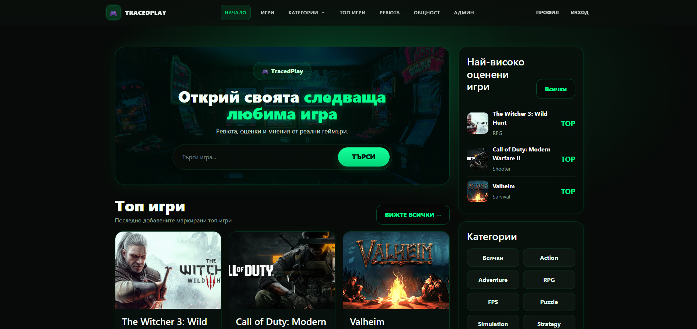
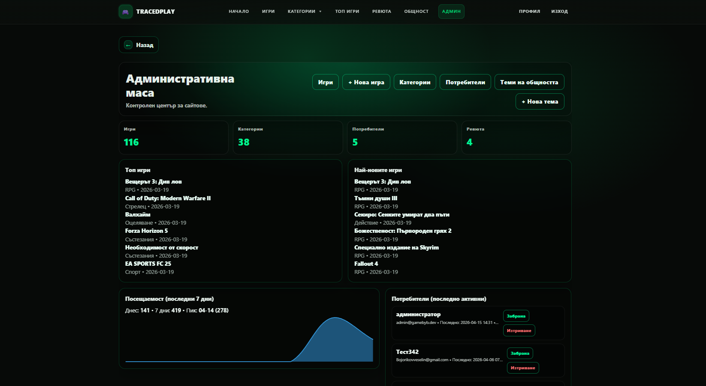

Traced Play е уеб платформа за организиране и представяне на видео съдържание. Фокусът е върху модерна визия и лесна навигация.
Идеята е да се симулира медийна/стрийминг платформа с категории и подредено съдържание.
Проектът демонстрира умения в HTML, CSS, JavaScript и структуриране на уеб приложения.
Основен фокус: UI дизайн, подредба и реалистично усещане за платформа.



HTML, CSS, JavaScript,maria DB